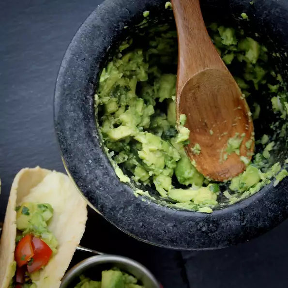

Simple Guacamole Recipe

Description
Simple guacamole recipe for all Mexican cuisine enthusiast!
Ingredients
- 5 avocados - peeled, pitted, and mashed
- 2 tablespoons fresh lemon juice
- ¾ cup minced green onion
- ½ cup minced fresh cilantro
- salt and pepper, to taste
Steps
- Stir together the avocado and lemon juice in a serving bowl; add the green onion
and cilantro; mix well. Season with salt and pepper.
Serve immediately or store covered in
refrigerator with avocado pits in the bowl to keep from browning.
- Eat!